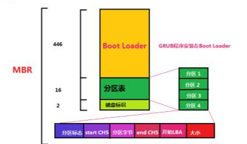
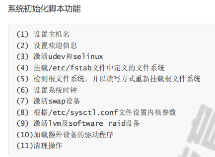

Linux启动流程
大致概述了Linux启动流程，包含硬件启动和Linux程序启动步骤。
硬件启动部分
开机后首先运行的是固化到主板ROM中的BIOS，BIOS中包含多个重要功能程序，其中首先运行加电自检POST初始化硬件设备、检测系统主要设备，然后根据BIOS设置的启动顺序，检测驱动器，最后读取硬盘第一个扇区（MBR扇区）加载其中的引导程序。
GRUB启动引导
MBR引导
上述读取的MBR扇区如下图，读取后会运行启动加载器Boot Loader程序，Boot Loader程序中含有GRUB程序的一部分，可在接下来开启GRUB（多重操作系统启动管理器）启动引导阶段。

因此MBR扇区中前446字节损坏将导致Boot Loader程序无法运行，分区表损坏将导致无法读取磁盘数据，都将导致无法启动。若MBR扇区损坏需要使用光盘进入救援模式修复。
GRUB启动引导一阶段
主要运行MBR中储存的Boot Loader程序，为阶段二做准备。在GRUB一阶段和二阶段中还存在过渡的1.5阶段，在此阶段中将识别boot loader程序后的分区表部分，启动分区文件系统，并访问/boot/grub目录下阶段二相关文件，将阶段二文件放入内存并执行，开启GRUB启动引导下一阶段。
GRUB启动引导二阶段
读取配置文件grub.conf，位置同为/boot/grub目录下。
加载内核镜像到内存并显示操作系统启动菜单，开启虚拟文件系统和系统内核。
内核引导阶段
内核加载过程探测可识别到的所有硬件设备，然后加载硬件驱动程序，以只读方式挂载根文件系统，运行用户空间的第一个应用程序：/sbin/init（所有进程的父进程，从CentOS7开始被systemd取代）
init进程初始化阶段
在该阶段将启动系统的初始化设置，主要包括：读取/etc/initab配置设定运行级别，运行sysinit初始化脚本，启动rc.local文件中的用户自定义服务。其中将具有以下主要功能。

最后执行/bin/login程序等待用户登录。
详细流程可参考下图

本博客所有文章除特别声明外，均采用 CC BY-SA 4.0 协议 ，转载请注明出处！